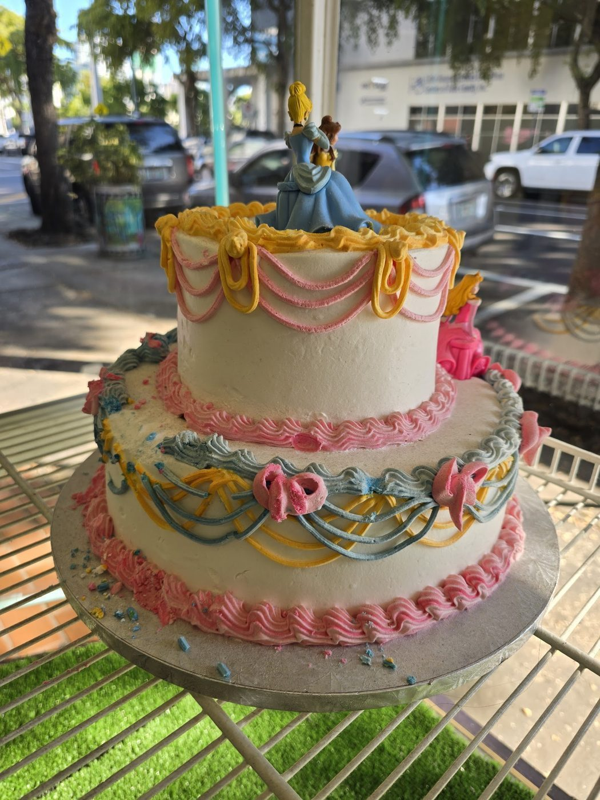
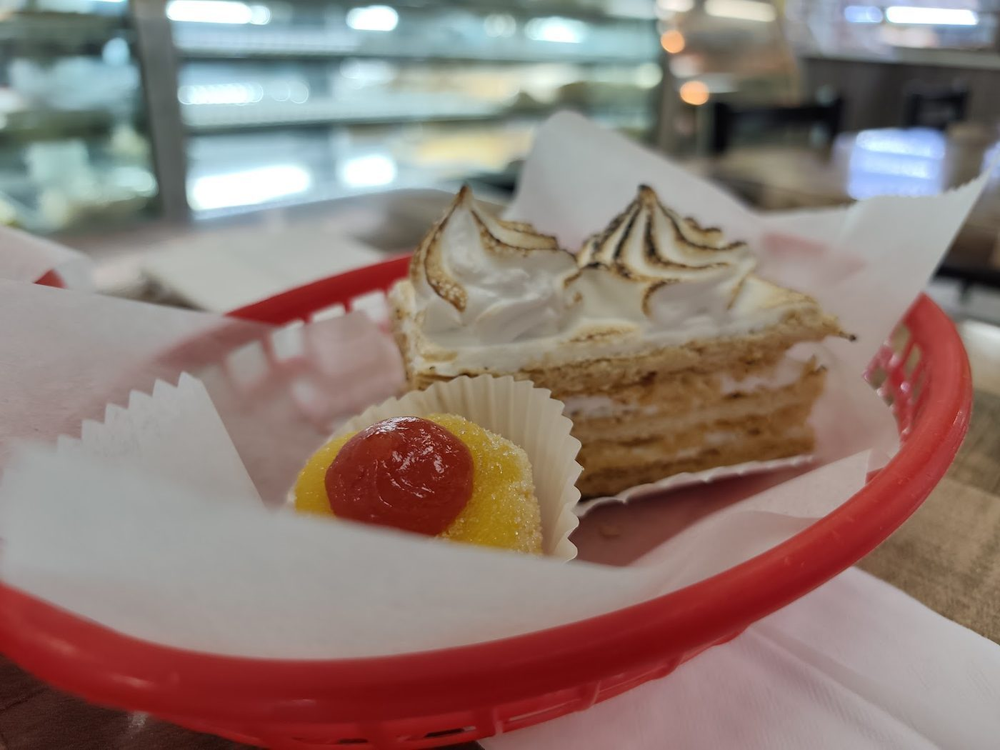

Lexington, Kentucky
Tinker's Cake Shop is a custom cake boutique founded in 2005 by Chef Cameron and Tracie, offering made-from-scratch wedding cakes, groom's cakes, cupcakes, cake tastings, and delivery.

Tinker's Cake Shop is a custom cake boutique in Lexington, founded in 2005 by Chef Cameron and Tracie. It offers made-from-scratch wedding cakes, groom's cakes, cupcakes, cake tastings, and delivery, plus a free first-anniversary top-tier recreation. Gluten-free chocolate and almond raspberry cakes are available. Call to ask about an order.

317 W Maxwell St, Lexington, KY 40508
Tuesday to Saturday 10:00 AM to 5:00 PM, Sunday and Monday closed